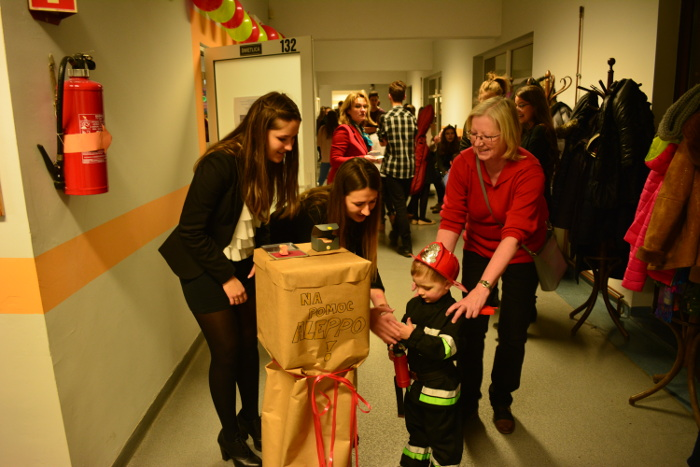

Gazeta ZSO nr II w Opolu
Numer 3/2017
Pomoc dla Aleppo
 Uczniowie ZSO Nr II w Opolu od wielu lat organizują bale noworoczne i koncerty charytatywne, by pomóc potrzebującym. W tym roku, przed feriami przygotowali zabawę z której dochód przeznaczyli dla dzieci w syryjskim Aleppo. Tegoroczny koncert połączony był z balem dla dzieci pracowników szkoły i młodszego rodzeństwa licealistów. W części artystycznej szkolny zespół muzyczny składający się z uczniów gimnazjum i liceum zaprezentował różne utwory, od tradycyjnych kolęd do popularnych piosenek. - Jednak staraliśmy się utrzymać wszystko w odpowiedniej atmosferze, przede wszystkim chcieliśmy przekazać wezwanie o pomoc i pokazać że każdy może wesprzeć ofiary tak strasznych konfliktów – wyjaśniają uczniowie z klasy IIH, która zorganizowała imprezę pod okiem pani J. Toll. - Postaraliśmy się, by zaproszone dzieci poczuły się w naszej szkole jak najlepiej. Przez kilka dni poprzedzających koncert można było zauważyć na korytarzach sporo osób szyjących filcowe słoniki dla dzieci. Sale lekcyjne na parterze szkoły, w których przygotowaliśmy dla naszych małych gości wiele atrakcji, gier i zabaw, zostały świątecznie ozdobione. Ugotowaliśmy kilka litrów gorącej czekolady – opowiada Julia Nowicka. - Na początku koncertu zaprosiliśmy dzieci do szkolnej świetlicy, by mogły wysłuchać bajek ze Wschodu. Opowiadaliśmy o tym, przez co przechodzą i jak żyją małe dzieci w Syrii. Później, by nieco rozładować atmosferę, zaproponowaliśmy dzieciom różne zabawy, by w tym czasie ich rodzice mogli słuchać koncertu. W czasie zbiórki pieniężnej prowadzonej przez cały czas trwania koncertu udało nam się zebrać 870 zł dla potrzebujących w Aleppo.
ul. Pułaskiego 3
45-048 Opole
tel. 077 45 422 86
fax 077 02 18 87
e-mail:
bez.tytulu@o2.pl
Ola Orłowska
DTP
Michał Woś
Opiekun
mgr Lucyna Rudnik
Ola Orłowska, Ania Cichy, Dagmara Cioska, Julia Nowicka, Julia Marcinów, Hania Szarzewicz, Michał Woś, Bartek Lipnicki, Jonasz Mularz, Paweł Kubacki, Mateusz Pietruszyński, Mateusz Orlik